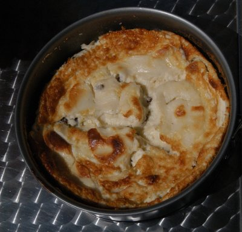

| Zutaten für 4 Personen: | |
| 1 EL | Butter |
| 2 | Eier |
| 1 EL | Griess |
| 2 EL | Maispuder |
| 1 EL | Weissmehl |
| 235 g | Zucker |
| 1/4 Tasse | Milch |
| 500 g | Speisequark |
| 1 Prise | Salz |
| 1/2 | Zitrone |
| 1/2 Tasse | Rosinen |
Mit etwas Butter die 22cm Springform ausbuttern.
1 Ei aufschlagen und schaumig rühren, dann 1 EL Griess, 1 EL Maispuder, 1 EL Weissmehl, 60 g Zucker und 0.5dl Milch zugeben und gut verrühren. Dann in eine gefettete Springform einfüllen.
Quarkmasse: 500g Speisequark, 1 Eigelb, 175g Zucker, Salz, 1EL Maispuder, Saft der halben Zitrone, 1/2 Tasse Rosinen. Alles gut verrühren.
Eiweiss zu Schnee schlagen und darunter ziehen.
Quark/Eiweiss-Masse über die erste verteilen und im mässig heissen Ofen (170°C) etwa 1 Stunde backen. Ofen soll nicht vorgeheizt werden.
Herbert Eigenmann, Code: QKO
Etwas verwirrend geschrieben (jetzt umformuliert). Wir fanden die Torte fast etwas auf der süssen Seite aber gut geniessbar. RE 29.5.2011
@LINKBACK_TAG@ @WAKELOCK@